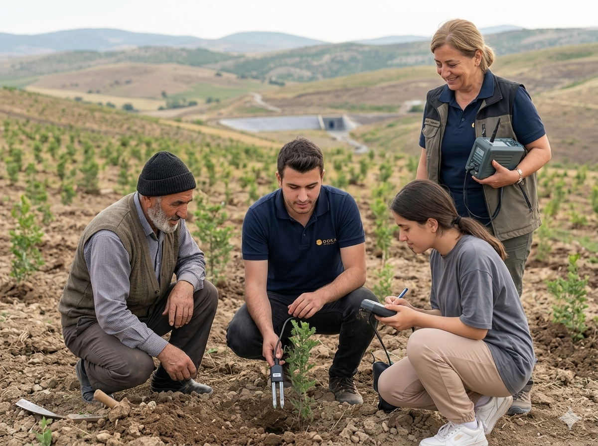

DOKA Madencilik is formally established as a dedicated precious metals exploration and mining company within the Oltankoleoglu Group, with initial licensed areas secured in Kırşehir, Bayburt, and Yozgat.
10 Oct 2024

The Oltankoleoglu Group has formally established DOKA Madencilik as a dedicated precious metals exploration and mining entity, incorporated under Turkish commercial law, with active mining licenses in Kırşehir, Bayburt, and Yozgat provinces.
DOKA Madencilik's formation reflects the Group's strategic decision to direct a portion of its resource and infrastructure expertise toward the precious metals sector, viewed as a high-opportunity area given Turkey's significant but underexplored geological endowment in gold and silver.
DOKA operates with a commitment to the environmental, governance, and community standards that underpin the Oltankoleoglu Group's broader activities. The company will publish regular operational updates through this Newsroom and through direct communications with registered investors and stakeholders. Enquiries may be directed to the company via the Contact page.